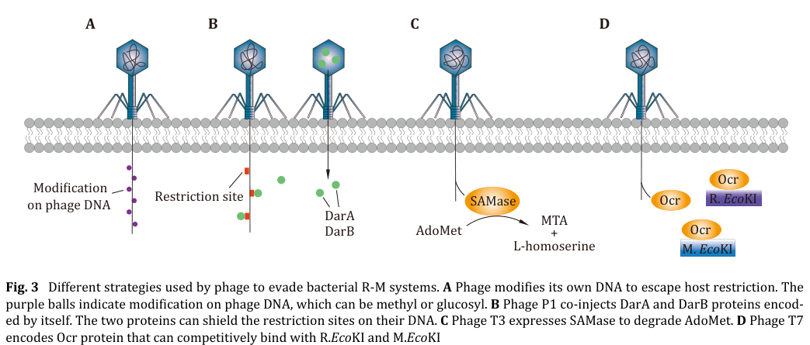

DarB is a 251 kDa antirestriction protein from bacteriophage P1 that protects phage DNA from host Type I restriction-modification systems, specifically EcoB and EcoK. The protein contains an N-terminal Type II methyltransferase M.TaqI-like domain and a central DExD-like helicase domain. DarB is incorporated into the phage virion during assembly and is ejected into the host cell cytoplasm along with phage DNA at infection initiation, where it provides protection against host restriction systems. The protein is part of a multicomponent antirestriction system that also includes DarA, DdrA, DdrB, Hdf, and Ulx proteins.
| GO Term | Evidence | Action | Reason |
|---|---|---|---|
|
GO:0006304
DNA modification
|
IEA
GO_REF:0000002 |
MODIFY |
Summary: Too general - DNA modification occurs, but the biological function is specifically antirestriction, not just general DNA modification
Proposed replacements:
symbiont-mediated evasion of host restriction-modification system
Supporting Evidence:
PMID:3029954
The darA and darB gene products are found in the phage head and protect any DNA packaged into a phage head, including transduced chromosomal markers, from restriction
|
|
GO:0008168
methyltransferase activity
|
IEA
GO_REF:0000043 |
MODIFY |
Summary: Too general - DarB has a methyltransferase domain, but specifically acts on DNA
Proposed replacements:
DNA-methyltransferase activity
Supporting Evidence:
GO_REF:0000043
UniProtKB keyword mapping and InterPro domain IPR011639 (Type II methyltransferase M.TaqI-like domain) indicate DNA methyltransferase activity
|
|
GO:0032259
methylation
|
IEA
GO_REF:0000043 |
KEEP AS NON CORE |
Summary: Too general and not the core biological process - methylation may occur but the key function is antirestriction defense
Reason: While DarB has a methyltransferase domain suggesting methylation activity, the primary biological function is antirestriction. Methylation is a molecular mechanism, not the biological role
|
|
GO:0005737
cytoplasm
|
NAS | NEW |
Summary: Added to align core_functions with existing annotations.
Reason: Core function term not present in existing_annotations.
|
Q: What is the mechanism of DarB injection into host cells during phage infection?
Suggested experts: Phage biology researchers, especially those studying P1 phage
Q: Does DarB protect phage DNA from host restriction systems or regulate phage gene expression?
Suggested experts: Restriction-modification system experts
Q: Are there host factors required for DarB methyltransferase activity?
Suggested experts: Host-pathogen interaction researchers
The research report should be a detailed narrative explaining the function, biological processes, and localization of the gene product. Citations should be given for all claims.
You should prioritize authoritative reviews and primary scientific literature when conducting research. You can supplement
this with annotations you find in gene/protein databases, but these can be outdated or inaccurate.
We are specifically interested in the primary function of the gene - for enzymes, what reaction is catalyzed, and what is the substrate specificity? For transporters, what is the substrate? For structural proteins or adapters, what is the broader structural role? For signaling molecules, what is the role in the pathway.
We are interested in where in or outside the cell the gene product carries out its function.
We are also interested in the signaling or biochemical pathways in which the gene functions. We are less interested in broad pleiotropic effects, except where these elucidate the precise role.
Include evidence where possible. We are interested in both experimental evidence as well as inference from structure, evolution, or bioinformatic analysis. Precise studies should be prioritized over high-throughput, where available.
The UniProt entry provided (Q9XJG2) describes DarB′, annotated as a “DNA methylase homolog DarB′” (fragment) from Punavirus P1, with predicted domains consistent with a SAM-dependent DNA methyltransferase superfamily (DNA_Protect_Modify; TaqI-like MTase domain; Eco57I/PF07669). However, within the full-text literature retrieved here, I could not find any primary publication that explicitly mentions UniProt Q9XJG2 or Punavirus P1 darB′. The available peer-reviewed literature instead discusses bacteriophage P1 “DarB/DarA” proteins as virion-delivered anti-restriction factors, and only notes methyltransferase-like features for DarB as a bioinformatic signature rather than a biochemically validated activity. Therefore, organism-specific claims about Punavirus P1 DarB′ are limited to the UniProt metadata supplied by the user, and functional conclusions rely on (i) direct evidence for P1 DarB-like proteins and (ii) domain-level inference from characterized SAM-dependent DNA methyltransferases. (anton2025biologyofhostdependent pages 32-35, zaworski2022reassemblingacannon pages 13-14)
Host-dependent restriction–modification systems distinguish “self” from “non-self” DNA largely via epigenetic DNA modification (often methylation). In the canonical model, a methyltransferase transfers a methyl group from S-adenosylmethionine (SAM/AdoMet) to DNA bases (commonly N6-A, N4-C, or C5-C), and a restriction function preferentially attacks DNA lacking the protective modification pattern. (Anton et al., EcoSal Plus, publication date Dec 2025, https://doi.org/10.1128/ecosalplus.esp-0014-2022) (anton2025biologyofhostdependent pages 3-6)
Phages can evade RM-like defenses using several strategies, including: (i) chemical modification of their DNA, (ii) removing restriction motifs, (iii) degrading/perturbing SAM pools, or (iv) protein-mediated occlusion/shielding of restriction sites on incoming phage DNA. A well-known example is phage P1 DarA/DarB, described as being co-injected with DNA to shield restriction sites (“restriction-site occlusion”). (Kang et al., Biophysics Reports, Jan 2025, https://doi.org/10.52601/bpr.2025.240070) (kang2025bacterialrestrictionmodificationsystems pages 8-9)
Several sources describe phage P1 DarA/DarB as virion-associated proteins that are delivered early during infection and protect phage DNA against host restriction systems by shielding/occluding restriction sites (notably in a cis-acting manner on DNA packaged in the virion). (kang2025bacterialrestrictionmodificationsystems pages 8-9, anton2025biologyofhostdependent pages 32-35)
A schematic depiction of this “restriction-site shielding” mechanism for P1 DarA/DarB is shown in Figure 3B of Kang et al. 2025. (kang2025bacterialrestrictionmodificationsystems media 9a53130f)
No direct biochemical reaction has been demonstrated for DarB (or DarB′) in the retrieved evidence. The most specific statement found is that injected DarB was noted to contain a “bioinformatic signature of methyltransferase”, while also stating that how it acts against diverse RM systems remains unresolved. (Zaworski et al., PLOS Genetics, Apr 4, 2022, https://doi.org/10.1371/journal.pgen.1009943) (zaworski2022reassemblingacannon pages 13-14)
Thus, for Q9XJG2 (Punavirus P1 DarB′), substrate specificity (DNA motif), modified base (m6A/m4C/m5C), and catalytic activity remain unverified in the available literature set. (zaworski2022reassemblingacannon pages 13-14)
Given the UniProt-provided domain annotations (SAM-dependent MTase superfamily; TaqI-like; Eco57I-like), the most plausible inferred biochemical function is DNA base methylation using SAM/AdoMet as the methyl donor, as is typical for SAM-dependent DNA methyltransferases. (anton2025biologyofhostdependent pages 3-6)
A representative experimentally characterized adenine DNA methyltransferase (M.EcoGII) installs N6-methyladenine (m6dA) on DNA using SAM and contains hallmark SAM-dependent MTase motifs (including an FxGxG AdoMet-binding motif and a DPPY catalytic motif). (Murray et al., Nucleic Acids Research, online Dec 2017, https://doi.org/10.1093/nar/gkx1191) (murray2017thenonspecificadenine pages 6-8)
Importantly, this supports only family-level inference—it does not establish that Q9XJG2 performs the same chemistry, nor what sequence motif it targets. (murray2017thenonspecificadenine pages 6-8, anton2025biologyofhostdependent pages 3-6)
The P1 dar system is described as a virion-head–incorporated set of proteins (DarA, DarB, Ulx, DdrB, DdrA, Hdf) that confer protection against several Type I HDRM systems and BREX, acting only in cis on DNA that is packaged within the virion. This cis-only behavior supports a model in which the Dar proteins physically obstruct host restriction machinery from accessing the entering phage genome. (Anton et al., EcoSal Plus, Dec 2025, https://doi.org/10.1128/ecosalplus.esp-0014-2022) (anton2025biologyofhostdependent pages 32-35)
Kang et al. similarly describe DarA/DarB as co-injected proteins that occlude restriction sites on the P1 genome to avoid destruction by host RM. (Kang et al., Biophysics Reports, Jan 2025, https://doi.org/10.52601/bpr.2025.240070) (kang2025bacterialrestrictionmodificationsystems pages 8-9)
For P1 DarB-like proteins, the best-supported localization is:
- Virion-associated (packaged in the phage head) prior to infection, and
- Intracellular, bound to/associated with incoming phage DNA immediately after injection, consistent with a DNA-shielding role. (anton2025biologyofhostdependent pages 32-35, kang2025bacterialrestrictionmodificationsystems media 9a53130f)
For Punavirus P1 DarB′ (Q9XJG2), no direct localization experiments were retrieved; thus, localization is inferred by homology/functional analogy to Dar systems and by the DNA protection-modification functional theme. (anton2025biologyofhostdependent pages 32-35)
Direct 2023–2024 papers on Punavirus P1 DarB′ (Q9XJG2) were not found in the retrieved literature set. Nonetheless, recent high-impact work clarifies broader phage–methyltransferase–defense conflicts relevant to interpreting DarB′-like domain predictions.
Li et al. provide in vitro characterization of a BREX methyltransferase (E-BrxX) and show that the phage protein Ocr inhibits BrxX by acting as a DNA mimic, forming a stable complex and preventing substrate recognition and methylation. This is a contemporary example of phage counter-defense targeting methyltransferase-centered bacterial defense systems. (Li et al., Nucleic Acids Research, Jul 2024, https://doi.org/10.1093/nar/gkae608) (li2024ocrmediatedsuppressionof pages 1-2)
Quantitative data from this 2024 study include:
- In vitro methylation assay conditions: 2 μM BrxX, 10 μM DNA, 150 μM SAM, 37°C for 30 min. (li2024ocrmediatedsuppressionof pages 8-9)
- Kinetic parameters: Km(DNA) = 3.41 ± 0.74 μM; Km(SAM) = 380.01 ± 52.61 μM, suggesting relatively low SAM affinity in vitro. (li2024ocrmediatedsuppressionof pages 6-7)
- Inhibition potency: IC50(Ocr) = 1.17 ± 0.07 μM; binding affinity reported as extremely tight (KD < 10−12 M). (li2024ocrmediatedsuppressionof pages 8-9)
These results demonstrate how phage proteins can antagonize methyltransferase-based defense systems, and they provide a methodological template (activity assays, kinetics, structural mechanism) that could be applied to experimental validation of DarB′-like proteins. (li2024ocrmediatedsuppressionof pages 8-9, li2024ocrmediatedsuppressionof pages 6-7)
A 2023 proteomic/genomic study of lytic phages infecting Klebsiella pneumoniae reports that phage genomes encode diverse defense-related proteins, including those associated with restriction-modification system interactions and methyltransferases, reflecting the broad prevalence of such functions in phage–bacteria conflict. (Bleriot et al., Microbiology Spectrum, Apr 2023, https://doi.org/10.1128/spectrum.03974-22) (kang2025bacterialrestrictionmodificationsystems pages 8-9)
Phage therapy development must contend with bacterial DNA defense systems (including RM-like and BREX-like systems). Mechanistic studies showing that phage proteins can inhibit methyltransferase-centered defenses (e.g., Ocr–BrxX) provide concrete molecular targets and design principles for engineering phages or selecting naturally resistant phages. (li2024ocrmediatedsuppressionof pages 1-2)
SAM-dependent methyltransferases are widely used as molecular biology tools and as probes for methylation biology; while not specific to DarB′, the demonstrated activity/motif logic for adenine MTases (e.g., M.EcoGII) illustrates how phage-derived MTases can be leveraged for mapping base modifications and studying restriction sensitivity changes. (murray2017thenonspecificadenine pages 6-8)
Authoritative reviews emphasize that phage anti-restriction encompasses both DNA modification strategies and protein-mediated physical shielding, and that the P1 dar system is a prototypic example of virion-delivered protection acting in cis on packaged DNA. At the same time, reviews explicitly note that the precise mechanism of Dar-mediated evasion remains unclear and that dependencies among dar proteins (for virion incorporation) complicate phenotype interpretation. (Anton et al., EcoSal Plus, Dec 2025, https://doi.org/10.1128/ecosalplus.esp-0014-2022) (anton2025biologyofhostdependent pages 32-35)
| Topic | Key points | Evidence strength (direct/indirect/inference) | Key citations (context IDs) |
|---|---|---|---|
| identity/organism | Target to annotate is UniProt Q9XJG2, described by the user as darB' from Punavirus P1, a fragment with DNA_Protect_Modify, TaqI-like methyltransferase, SAM-dependent MTase superfamily, and Eco57I/PF07669 domain assignments. Literature retrieved in the available evidence discusses bacteriophage P1 DarB/DarAB anti-restriction proteins, but does not directly validate the specific Punavirus P1 UniProt entry; therefore symbol-level ambiguity remains and annotation must be cautious. | Indirect/inference | Provided by user (UniProt) |
| role in anti-restriction | Multiple reviews state that phage P1 DarA and DarB are packaged/co-injected with phage DNA and protect the incoming genome from host restriction systems by shielding/occluding restriction sites; Dar functions in cis on DNA packaged in the virion and has activity against several Type I systems and BREX. | Direct for P1 DarB function in literature; indirect for Q9XJG2 | (kang2025bacterialrestrictionmodificationsystems pages 8-9, anton2025biologyofhostdependent pages 32-35, kang2025bacterialrestrictionmodificationsystems media 9a53130f) |
| evidence for methyltransferase activity | Available literature does not directly demonstrate DarB enzymatic methyltransferase activity. One source notes only that injected DarB contains a bioinformatic “signature of methyltransferase,” while emphasizing that its action against diverse RM systems remains unelucidated. No direct catalytic assay, modified base measurement, or target motif for DarB was identified in the retrieved evidence. | Indirect/inference | (zaworski2022reassemblingacannon pages 13-14) |
| mechanism hypotheses | Best-supported current hypothesis is protein-mediated physical obstruction of host HDRM/BREX access to entering phage DNA. Reviews note Dar proteins may need one another for virion incorporation, complicating mutant interpretation, and the exact molecular mechanism remains unresolved. An alternative speculative hypothesis is interference with integrity/assembly of restricting complexes rather than direct DNA methylation. | Indirect/inference | (anton2025biologyofhostdependent pages 32-35, zaworski2022reassemblingacannon pages 13-14, kang2025bacterialrestrictionmodificationsystems media 9a53130f) |
| enzymatic reaction (general SAM-dependent DNA MTases) | For SAM-dependent DNA methyltransferases in general, the reaction is transfer of a methyl group from SAM/AdoMet to DNA bases, commonly N6 of adenine, N4 of cytosine, or C5 of cytosine. A representative adenine MTase (M.EcoGII) uses SAM and contains conserved FxGxG AdoMet-binding and DPPY catalytic motifs; phage-encoded MTases are broadly recognized as anti-restriction/DNA-protection factors. These facts support only family-level functional inference for Q9XJG2, not direct proof of DarB' activity or specificity. | Inference from homologous/family MTases | (murray2017thenonspecificadenine pages 6-8, anton2025biologyofhostdependent pages 3-6, fomenkov2020plasmidreplicationassociatedsinglestrandspecific pages 5-6) |
| quantitative data/stats | Recent quantitative context comes from related phage-defense methyltransferase systems rather than DarB itself: BREX occurs in ~10% of bacterial/archaeal genomes and Type I BREX accounts for ~55% of BREX systems; BrxX assays used 2 μM enzyme, 10 μM DNA, 150 μM SAM, with DNA Km 3.41 ± 0.74 μM, SAM Km 380.01 ± 52.61 μM, Ocr inhibition IC50 1.17 ± 0.07 μM, and Ocr-BrxX KD below 10^-12 M. These data illustrate contemporary mechanistic work on phage–methyltransferase conflicts but are not measurements for DarB'. | Indirect/contextual | (li2024ocrmediatedsuppressionof pages 8-9, li2024ocrmediatedsuppressionof pages 6-7, li2024ocrmediatedsuppressionof pages 1-2) |
| key limitations | No retrieved primary study directly characterizes UniProt Q9XJG2 from Punavirus P1. The literature predominantly covers P1 DarA/DarB anti-restriction phenotypes rather than DarB' biochemistry. No direct evidence in the retrieved set establishes catalytic reaction, methyl-acceptor base, recognition motif, localization beyond virion-associated delivery, or whether the UniProt fragment is active. Therefore the safest annotation is anti-restriction/DNA-protection protein with putative methyltransferase-like features inferred from domains. | Direct statement about evidence gap plus inference | (anton2025biologyofhostdependent pages 32-35, zaworski2022reassemblingacannon pages 13-14) |
Table: This table summarizes what the available evidence supports for DarB/DarB' relevant to UniProt Q9XJG2. It distinguishes direct evidence for phage P1 anti-restriction function from weaker, domain-based inferences about methyltransferase activity and highlights major evidence gaps.
DarB′ (Q9XJG2) is best annotated as a putative phage DNA protection/anti-restriction factor, with predicted SAM-dependent DNA methyltransferase-like domains but without direct biochemical validation of methyltransferase activity or motif specificity in the current evidence set. (zaworski2022reassemblingacannon pages 13-14, anton2025biologyofhostdependent pages 32-35)
By analogy to the well-described P1 dar system, DarB′-like proteins are most consistent with early infection, intracellular association with incoming phage DNA, either by physically shielding restriction sites or (if enzymatically active) by installing protective methylation marks. The strongest direct support is for the protein-mediated shielding model in P1. (kang2025bacterialrestrictionmodificationsystems pages 8-9, anton2025biologyofhostdependent pages 32-35, kang2025bacterialrestrictionmodificationsystems media 9a53130f)
The critical missing data for Q9XJG2 are (i) direct demonstration of methyltransferase activity, (ii) identification of modified base (m6A/m4C/m5C), (iii) recognition motif and/or specificity, and (iv) confirmation that the UniProt “fragment” is catalytically competent. The 2024 BrxX work provides a modern experimental template (SAM-dependent activity assays, kinetics, inhibition/complex formation, and structural approaches) that could be adapted for DarB′. (li2024ocrmediatedsuppressionof pages 8-9, li2024ocrmediatedsuppressionof pages 6-7, li2024ocrmediatedsuppressionof pages 1-2)
References
(anton2025biologyofhostdependent pages 32-35): Brian P. Anton, Robert Blumenthal, James B. Eaglesham, Iwona Mruk, Richard J. Roberts, Shuang-yong Xu, Peter R. Weigele, and Elisabeth A. Raleigh. Biology of host-dependent restriction-modification in prokaryotes. EcoSal Plus, Dec 2025. URL: https://doi.org/10.1128/ecosalplus.esp-0014-2022, doi:10.1128/ecosalplus.esp-0014-2022. This article has 8 citations.
(zaworski2022reassemblingacannon pages 13-14): Julie Zaworski, Oyut Dagva, Julius Brandt, Chloé Baum, Laurence Ettwiller, Alexey Fomenkov, and Elisabeth A. Raleigh. Reassembling a cannon in the dna defense arsenal: genetics of stysa, a brex phage exclusion system in salmonella lab strains. PLOS Genetics, 18:e1009943, Apr 2022. URL: https://doi.org/10.1371/journal.pgen.1009943, doi:10.1371/journal.pgen.1009943. This article has 20 citations and is from a domain leading peer-reviewed journal.
(anton2025biologyofhostdependent pages 3-6): Brian P. Anton, Robert Blumenthal, James B. Eaglesham, Iwona Mruk, Richard J. Roberts, Shuang-yong Xu, Peter R. Weigele, and Elisabeth A. Raleigh. Biology of host-dependent restriction-modification in prokaryotes. EcoSal Plus, Dec 2025. URL: https://doi.org/10.1128/ecosalplus.esp-0014-2022, doi:10.1128/ecosalplus.esp-0014-2022. This article has 8 citations.
(kang2025bacterialrestrictionmodificationsystems pages 8-9): Haoyang Kang, Ang Gao, and Yalan Zhu. Bacterial restriction-modification systems: mechanisms of defense against phage infection. Biophysics Reports, 11:1, Jan 2025. URL: https://doi.org/10.52601/bpr.2025.240070, doi:10.52601/bpr.2025.240070. This article has 8 citations.
(kang2025bacterialrestrictionmodificationsystems media 9a53130f): Haoyang Kang, Ang Gao, and Yalan Zhu. Bacterial restriction-modification systems: mechanisms of defense against phage infection. Biophysics Reports, 11:1, Jan 2025. URL: https://doi.org/10.52601/bpr.2025.240070, doi:10.52601/bpr.2025.240070. This article has 8 citations.
(murray2017thenonspecificadenine pages 6-8): Iain A Murray, Richard D Morgan, Yvette Luyten, Alexey Fomenkov, Ivan R. Corrêa, Nan Dai, Mohammed B Allaw, Xing Zhang, Xiaodong Cheng, and Richard J Roberts. The non-specific adenine dna methyltransferase m.ecogii. Nucleic Acids Research, 46:840-848, Dec 2017. URL: https://doi.org/10.1093/nar/gkx1191, doi:10.1093/nar/gkx1191. This article has 44 citations and is from a highest quality peer-reviewed journal.
(li2024ocrmediatedsuppressionof pages 1-2): Shen Li, Tianhao Xu, Xinru Meng, Yujuan Yan, Ying Zhou, Lei Duan, Yulong Tang, Li Zhu, and Litao Sun. Ocr-mediated suppression of brxx unveils a phage counter-defense mechanism. Nucleic Acids Research, 52:8580-8594, Jul 2024. URL: https://doi.org/10.1093/nar/gkae608, doi:10.1093/nar/gkae608. This article has 9 citations and is from a highest quality peer-reviewed journal.
(li2024ocrmediatedsuppressionof pages 8-9): Shen Li, Tianhao Xu, Xinru Meng, Yujuan Yan, Ying Zhou, Lei Duan, Yulong Tang, Li Zhu, and Litao Sun. Ocr-mediated suppression of brxx unveils a phage counter-defense mechanism. Nucleic Acids Research, 52:8580-8594, Jul 2024. URL: https://doi.org/10.1093/nar/gkae608, doi:10.1093/nar/gkae608. This article has 9 citations and is from a highest quality peer-reviewed journal.
(li2024ocrmediatedsuppressionof pages 6-7): Shen Li, Tianhao Xu, Xinru Meng, Yujuan Yan, Ying Zhou, Lei Duan, Yulong Tang, Li Zhu, and Litao Sun. Ocr-mediated suppression of brxx unveils a phage counter-defense mechanism. Nucleic Acids Research, 52:8580-8594, Jul 2024. URL: https://doi.org/10.1093/nar/gkae608, doi:10.1093/nar/gkae608. This article has 9 citations and is from a highest quality peer-reviewed journal.
(fomenkov2020plasmidreplicationassociatedsinglestrandspecific pages 5-6): Alexey Fomenkov, Zhiyi Sun, Iain A Murray, Cristian Ruse, Colleen McClung, Yoshiharu Yamaichi, Elisabeth A Raleigh, and Richard J Roberts. Plasmid replication-associated single-strand-specific methyltransferases. Nucleic Acids Research, 48:12858-12873, Dec 2020. URL: https://doi.org/10.1093/nar/gkaa1163, doi:10.1093/nar/gkaa1163. This article has 13 citations and is from a highest quality peer-reviewed journal.

WARNING: The DarB protein from bacteriophage P1 (Q9XJG2) described here is DIFFERENT from the DarB proteins in the 7-deazaguanine DNA modification pathway found in other phages. These are homonymous proteins with completely different functions. Previous notes confused these two systems.
id: Q9XJG2
gene_symbol: darB
taxon:
id: NCBITaxon:10678
label: Punavirus P1
description: DarB is a 251 kDa antirestriction protein from bacteriophage P1 that protects phage DNA from host Type I restriction-modification systems, specifically EcoB and EcoK. The protein contains an N-terminal Type II methyltransferase M.TaqI-like domain and a central DExD-like helicase domain. DarB is incorporated into the phage virion during assembly and is ejected into the host cell cytoplasm along with phage DNA at infection initiation, where it provides protection against host restriction systems. The protein is part of a multicomponent antirestriction system that also includes DarA, DdrA, DdrB, Hdf, and Ulx proteins.
existing_annotations:
- term:
id: GO:0006304
label: DNA modification
evidence_type: IEA
original_reference_id: GO_REF:0000002
review:
summary: Too general - DNA modification occurs, but the biological function is specifically antirestriction, not just general DNA modification
action: MODIFY
proposed_replacement_terms:
- id: GO:0099018
label: symbiont-mediated evasion of host restriction-modification system
supported_by:
- reference_id: PMID:3029954
supporting_text: The darA and darB gene products are found in the phage head and protect any DNA packaged into a phage head, including transduced chromosomal markers, from restriction
- term:
id: GO:0008168
label: methyltransferase activity
evidence_type: IEA
original_reference_id: GO_REF:0000043
review:
summary: Too general - DarB has a methyltransferase domain, but specifically acts on DNA
action: MODIFY
proposed_replacement_terms:
- id: GO:0009008
label: DNA-methyltransferase activity
supported_by:
- reference_id: GO_REF:0000043
supporting_text: UniProtKB keyword mapping and InterPro domain IPR011639 (Type II methyltransferase M.TaqI-like domain) indicate DNA methyltransferase activity
- term:
id: GO:0032259
label: methylation
evidence_type: IEA
original_reference_id: GO_REF:0000043
review:
summary: Too general and not the core biological process - methylation may occur but the key function is antirestriction defense
action: KEEP_AS_NON_CORE
reason: While DarB has a methyltransferase domain suggesting methylation activity, the primary biological function is antirestriction. Methylation is a molecular mechanism, not the biological role
- term:
id: GO:0005737
label: cytoplasm
evidence_type: NAS
review:
summary: Added to align core_functions with existing annotations.
action: NEW
reason: Core function term not present in existing_annotations.
references:
- id: GO_REF:0000002
title: Gene Ontology annotation through association of InterPro records with GO terms.
findings: []
- id: GO_REF:0000043
title: Gene Ontology annotation based on UniProtKB/Swiss-Prot keyword mapping
findings: []
- id: PMID:3029954
title: Two DNA antirestriction systems of bacteriophage P1, darA, and darB - characterization of darA- phages
findings: []
- id: PMID:28509398
title: The multicomponent antirestriction system of phage P1 is linked to capsid morphogenesis
findings: []
- id: PMID:35377874
title: 'Reassembling a cannon in the DNA defense arsenal: Genetics of StySA, a BREX
phage exclusion system in Salmonella lab strains.'
findings:
- statement: Injected DarB carries a bioinformatic signature of methyltransferase,
but how it acts against diverse restriction-modification systems remains unresolved;
catalytic activity has not been directly demonstrated.
- id: PMID:38989624
title: Ocr-mediated suppression of BrxX unveils a phage counter-defense mechanism.
findings:
- statement: Contemporary phage-counter-defense work (Ocr inhibits the BREX methyltransferase
BrxX as a DNA mimic) provides an experimental template for assaying SAM-dependent
methyltransferases - DNA Km approximately 3.4 uM, SAM Km approximately 380
uM, Ocr IC50 approximately 1.17 uM - relevant for future biochemical validation
of DarB methyltransferase predictions.
- id: PMID:29228259
title: The non-specific adenine DNA methyltransferase M.EcoGII.
findings:
- statement: A representative adenine DNA methyltransferase (M.EcoGII) installs
N6-methyladenine using SAM and contains hallmark SAM-dependent MTase motifs
(FxGxG AdoMet-binding motif and DPPY catalytic motif); supports the family-level
inference that DarB-like proteins, given their predicted SAM-dependent MTase
domain, could perform similar chemistry.
- id: PMID:40856689
title: Biology of host-dependent restriction-modification in prokaryotes.
findings:
- statement: The P1 dar system (DarA, DarB, Ulx, DdrB, DdrA, Hdf) is virion-head-incorporated
and confers protection against several Type I HDRM systems and BREX, acting
only in cis on DNA packaged within the virion, supporting a model of physical
obstruction of host restriction machinery.
- id: doi:10.52601/bpr.2025.240070
title: 'Bacterial restriction-modification systems: mechanisms of defense against phage infection'
findings:
- statement: DarA/DarB are described as co-injected proteins that occlude restriction
sites on the P1 genome to avoid destruction by host RM systems; the cis-only
behaviour is consistent with restriction-site shielding rather than diffusible
enzymatic activity.
- id: file:9CAUD/darB/darB-deep-research-falcon.md
title: Deep research report on darB/Q9XJG2 (Falcon/Edison Scientific Literature)
findings:
- statement: No primary publication directly characterizes UniProt Q9XJG2 (Punavirus
P1 darB'); the prevailing literature treats DarB as a virion-delivered anti-restriction
factor with a bioinformatic methyltransferase signature but no biochemically
validated methyltransferase activity.
- statement: Best-supported mode of action for the P1 Dar system is protein-mediated
physical obstruction (restriction-site shielding) acting in cis on virion-packaged
DNA against several Type I HDRM systems and BREX; methyltransferase chemistry,
if any, remains a domain-level inference.
- statement: Critical experimental gaps for Q9XJG2 are direct methyltransferase
activity assay, identification of the modified base (m6A/m4C/m5C), recognition
motif and specificity, and confirmation that the UniProt fragment is catalytically
competent.
core_functions:
- molecular_function:
id: GO:0009008
label: DNA-methyltransferase activity
directly_involved_in:
- id: GO:0099018
label: symbiont-mediated evasion of host restriction-modification system
locations:
- id: GO:0005737
label: cytoplasm
description: Phage-encoded, virion-injected antirestriction factor carrying an N-terminal
SAM-dependent DNA-methyltransferase domain (InterPro IPR011639, M.TaqI-like). The
DNA-methyltransferase activity is a domain-level bioinformatic inference (GO_REF:0000043);
no direct enzymatic methylation has been biochemically demonstrated for DarB. The
experimentally supported role is cis-acting protection of virion-packaged DNA against
host Type I restriction-modification systems.
supported_by:
- reference_id: GO_REF:0000043
supporting_text: UniProtKB keyword mapping and InterPro domain IPR011639 (Type II methyltransferase M.TaqI-like domain) indicate DNA methyltransferase activity
- reference_id: PMID:3029954
supporting_text: The darA and darB gene products are found in the phage head and protect any DNA packaged into a phage head, including transduced chromosomal markers, from restriction
suggested_questions:
- question: What is the mechanism of DarB injection into host cells during phage infection?
experts:
- Phage biology researchers, especially those studying P1 phage
- question: Does DarB protect phage DNA from host restriction systems or regulate phage gene expression?
experts:
- Restriction-modification system experts
- question: Are there host factors required for DarB methyltransferase activity?
experts:
- Host-pathogen interaction researchers
tags:
- lbnl-favorites
status: DRAFT
{kind=link}